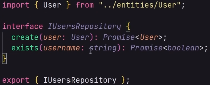

Database - Arquivo com a instancia do prisma para que possa ser utilizado em diversas partes do código.
Domaing -> Entities Aqui iremos criar as entidades a nível de domínio. São as entidades de forma mais pura, elas são a camada mais interna do ciclo de Clean, elas não conhecem mais nada. Essas Entidades geralmente são criada a partir de Classes.
Application -> useCases Aqui dentro iremos pensar tudo o que cada entidade pode vir a fazer. Por exemplo, um usuário pode ser cadastrar no sistema. Aqui entra basicamente todas as ações que alguém pode fazer dentro da nossa aplicação. Aqui falamos de Inspecao de Requisitos. Esses casos de uso geralmente serão uma classe que possuirá um único método chamado execute que irá executar o useCase. Dentro de cada useCase é necessário que ele receba por parâmetro todos os dados que serão necessários para que ele efetivamente construa. Exemplo:
A partir deste momento podemos comecar a testar as entidades e userCases. A partir daqui temos a base da estrutura da aplicacao. Temos as entidades e suas userCases. A partir daqui podemos mapear o funcionamento da aplicacao quase por completo sem depender de banco de dados, rotas, controllers.
Repositories: Dando continuidade, em algum momento iremos precisar começar a testar baseado em recursos que venham do banco, por exemplo: Posso adicionar um usuário com email já existente ? A resposta é não, mas como saberemos disso se o detentor dessa informacao é o banco ? usando. Para isso entendemos o Repositories. Teremos duas pastas divididas nessa sessao onde teremos os repositorios que se conectarao com o banco de dados (Prisma), e Também o repositório In-Memory (Mock). Para cada entidade que tivermos um repositório teremos uma interface, que sempre começará com a letra I, no caso de usuários por exemplo, usaremos IUserRepository. Dentro dele iremos definir o Contrato ou seja, os métodos que os UserRepositories(prisma+memory) deverão seguir.
